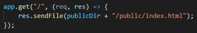

When serving files in express it is important to do two things. First but not neccessary in the way done below is to know that there is a variable called __dirname. This value is the directory of the project. When working on multiple machines the directory of a project can change. Using this value makes sure that if you open this project on a different machine the project will still be able to serve files
The second line is the method called app.use() and express.static(). These two methods tells express that whatever we define in the ' ' in this case 'public' is allowed for the user to access through their browser. Without it, the user cannot access HTML pages, images, scripts that run on the page etc.
Previously we have used the res.send() method to send JSON data to the browser. The res.sendFile() method sends full files to the browser. With this function we are able to send HTML files to be rendered in the users browser allowing for the creation of websites
With the folder 'public' now being literally public and our HTTP methods using the sendFile method we can now serve our users full HTML files with scripts and images to make it more interactive